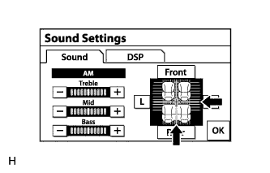

АУДИОВИЗУАЛЬНАЯ СИСТЕМА (для моделей с системой навигации) > Записи не воспроизводятся даже после выбора режима воспроизведения аудиозаписей через Bluetooth |
| 1.ПРОВЕРЬТЕ РАБОТУ СИСТЕМЫ |
Убедитесь, что портативный плеер работает нормально.
|
| ||||
| OK | |
| 2.ПРОВЕРЬТЕ НАСТРОЙКИ ВОСПРОИЗВЕДЕНИЯ ЗВУКА |
|  |
Нажмите кнопку "Sound" (звук) на экране аудиосистемы, чтобы вызвать экран "Sound Settings" (настройки звука).
Установите для параметров громкости, микшера и баланса значения по умолчанию и убедитесь в том, что звук воспроизводится нормально.
|
| ||||
| OK | |
| 3.ВЫПОЛНИТЕ ПРОВЕРКУ В ДРУГОМ АВТОМОБИЛЕ ТАКОЙ ЖЕ МОДЕЛИ С АУДИОСИСТЕМОЙ, ПОДДЕРЖИВАЮЩЕЙ ТЕХНОЛОГИЮ "BLUETOOTH" |
Проверьте, нормально ли воспроизводится звук аудиоплеера с поддержкой "Bluetooth" на другом автомобиле такой же модели с аудиосистемой, поддерживающей технологию "Bluetooth".
|
| ||||
| OK | ||
| ||